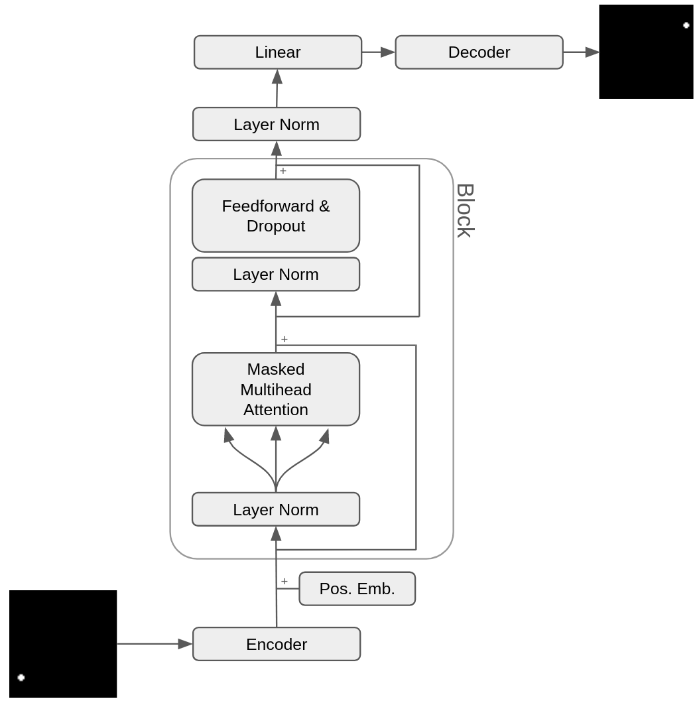

World models are prevalent in various applications, from robotics to self-driving cars. They are seen as solutions to many shortcomings of standard modeling approaches and can make reinforcement learning (RL) more sample efficient. However, the models required to process information from camera setups on robots and self-driving cars can be prohibitively expensive. Despite this, I wanted to experiment with the concept of world models. So, I created a simple "ball world" where a ball bounces around aimlessly for N frames. The goal is for the model to take the preceding frames as input and predict the next frame, essentially forecasting the ball's next position. Although this is a very basic world to model, it includes the essential components of more complex world models.
The model architecture is quite simple. It features an encoder that takes an image and transforms it into an embedding of size N. Although there are various ways to achieve this, the most common being the use of a Convolutional Neural Network (CNN), I opted for a Multi-Layer Perceptron (MLP) due to the small input dimensionality. After encoding the input, M of these encoded inputs are fed into a causal language model. I used a straightforward architecture inspired by Karpathy's GPT. The rationale behind this choice is to show that a task-specific architecture isn't necessary and that Transformers perform exceptionally well in this context. The model's task is to predict the next frame based on the previous M frames, outputting an embedding of size N. This embedding is then passed into a decoder, which is mainly an MLP, to generate a 64x64 binary image. This image represents the predicted next state of the "ball world."
The world model's dataset is generated synthetically using Python. Utilizing the Pillow library, a ball is drawn on a 64x64 canvas, and based on its trajectory and velocity, the ball is redrawn at a new location in each subsequent frame. A total of 1,000 sequences were generated, with each sequence comprising 20 frames. To introduce variation among the sequences, the velocity (ranging from -4 pixels to 4 pixels) and the initial location were uniformly sampled. Out of these sequences, 10% were reserved for validation purposes.
The training process is kept straightforward, employing a constant learning rate and the AdamW optimizer. The 20-frame sequences are divided into overlapping 5-frame sequences, where the first 4 frames serve as the input, and the final frame serves as the target for the model. The model undergoes approximately 160 epochs of training, which takes around 30 minutes on an A10 GPU.